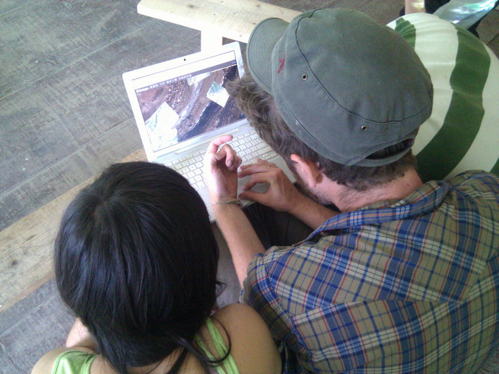

Construct validity refers to how theory was affected by gathered data and by the human realities of the research site or context. In the case of the Grassroots Mapping case studies, the variety of sites we attempted to map, and the time, cost, materials availability, and mapping goals we established with local partners at each sitedictated how we applied these technologies to specific problems. The process of making maps in these places and with these people also brought to light new ways of using and thinking about maps which has gradually changed how I approach map-making and present it to others. Most of all, there was a continual re-negotiation of why we made maps due to political, social, environmental, and economic context. This led to a shift from technological justifications such as higher resolution, better precision, and the more abstract beliefs in `open geodata' to more site-specific reasoning, as well as one which placed greater emphasis on non-quantitative results.
In Lima, Peru, we expected our claim that we could produce higher resolution imagery than available in Google Maps to inspire or incentivize participants; however most of the youth we were working with were unfamiliar with Google Maps, and comparisons did not resonate as strongly as we had hoped. However, the ability to see oneself in many of the aerial images resonated strongly with participants of all ages. The intent of our mapping work became more tactical, and more aggressive at times -- while these tools were originally designed to help communities map themselves, in Rock Creek, West Virginia, we used balloon mapping to gather data about a mining site operated by Massey Energy; a hostile organization. Members of Coal River Mountain Watch considered the land to be `theirs' in the sense that Massey had gained access to the site through a long history of permit and land ownership manipulations, and the map-making was intended to document what the company was doing `to Appalachia' and the communities surrounding the site.
(redefinition of main challenges - collaboration and integration - move towards illustrated guides, workshops, collaborations)
Perhaps the greatest change has been the application of Grassroots Mapping tools to ever-broader needs, starting with land tenure claims, and growing to include street mapping in Georgia, youth curricula in Boston, Lima, and the West Bank, and environmental monitoring in a wide variety of sites. In the Gulf of Mexico following the 2010 BP oil spill, the realization that our maps were detailed enough to see individual animals and plants became one of the most compelling reasons for the map-making, as did the ability to see ourselves in many images, connected to the camera by the 2000-foot tether. These discoveries broadened the scope of the map-making and affected which sites were targeted. In general, Grassroots Mapping has been slowly repositioned as a source for both ecologically relevant information at a high frequency of capture, and symbolically relevant imagery of events at a human scale.
| r0.5

|